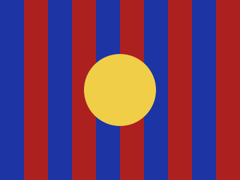

New to FC Barcelona? Start here.
Blaugrana Basics is a short, plain-language guide for people who are new to the club. You will find who Barça is, how to watch the games, what the club stands for, and how to plan a stadium visit. No prior soccer knowledge needed.

Key facts at a glance
- Founded in 1899 by Joan Gamper in Barcelona, Spain.
- The club colors are blue and garnet, called "blaugrana" in Catalan.
- The motto is "Més que un club," meaning "More than a club."
- The men's team plays in La Liga, Spain's top league.
Where to next?
Read the club history, learn how to follow the matches, explore the club culture, or plan a trip with the visiting guide.
Ask a beginner question
Tell us what you wish you knew about Barça, or how we can make this guide easier to use.